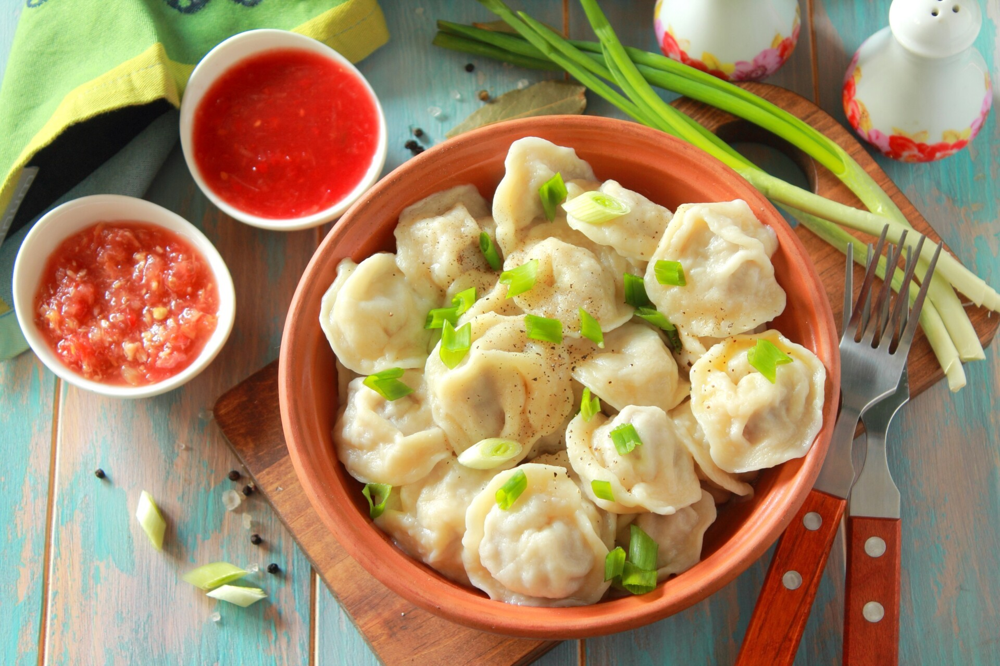
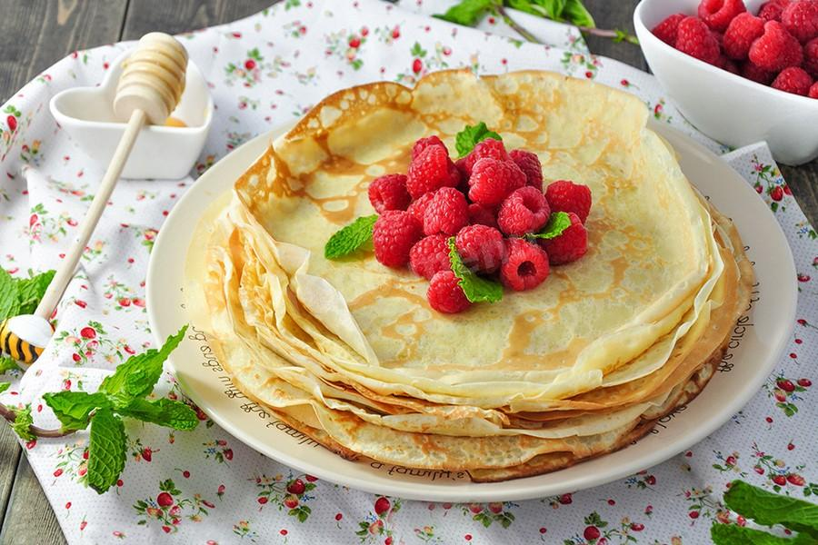

Пельмені

Під пельменями в Україні розуміють страву у вигляді відварених виробів з прісного тіста з несолодкою начинкою.
Олів'є

Салат "Олів'є" протягом десятиліть є головною стравою новорічного столу, ставши його невід'ємною частиною.
Млинці

Млинці традиційні для кухонь слов'янських народів і вживалися ще в дохристиянські часи.